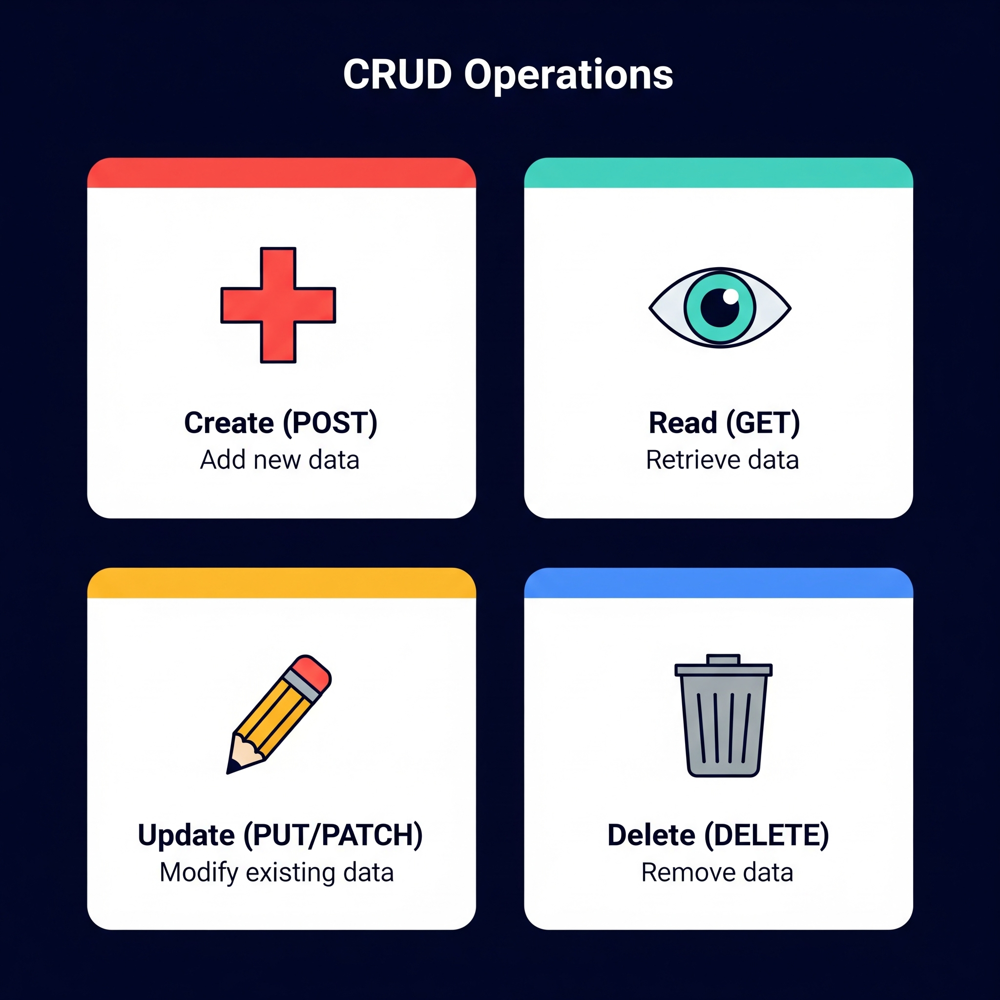
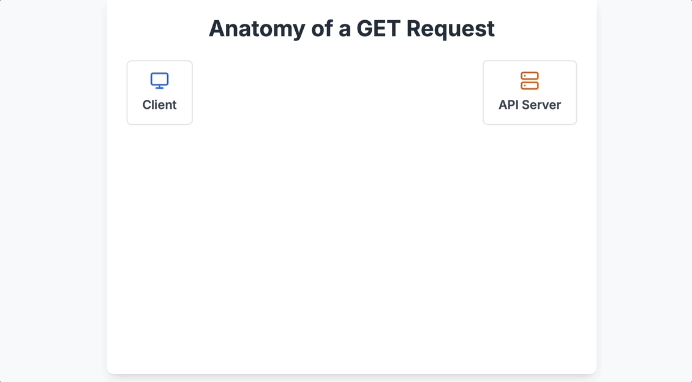

## EMPTY VERSION
# library(____)
# library(____)Session 2: Weather Data - OpenWeatherAPI
Session 2: Extracting data using APIs
Part 1. Goals & Objectives
By the end of this session, participants will be able to:
Understand the foundational concepts of APIs as a bridge for data exchange, including how they function in modern software and support real-time data extraction.
Query public APIs effectively, forming well-structured requests that interact with remote databases and return meaningful results.
Interpret JSON responses, with a focus on the data element, while also distinguishing between metadata and status codes. Develop an understanding of how HTTP status codes and API keys work to validate and secure data access.
Write clean, purposeful R code to send API requests, handle responses, and parse structured data into tidy, analyzable formats.
Part 2. Conceptual Foundation
Part A. Theoretical ideas of APIs
Note 1:
- This is not a webdeveloper nor a CS course but with a decent understanding of the logic, you and your students will appreciate the utilizartion of web scrapiing more
1. What is an API (again)?
It is the ability for software to communicate

- Q1: What is its utility of APIs? (multiple choice)
####——————— #### Q1.
(Multiple Choice): What is the primary utility of a web API for a data analyst? a) To create visual websites for data projects. b) To allow programmatic, repeatable, and direct access to live data from an external source. c) To store large CSV files in the cloud. d) To design the database structure for a server.
Ans Q1. b) An API provides a structured way for a program (like an R script) to directly request and receive live data, making data acquisition automated and scalable. ####———————
Note 2:
This image is overly simplified in that a client left makes request through an api to a server/database then the server/database provides responses
A client and server can exist on the same computer. This is often what’s happening in local development (e.g., querying a local database from R)
2. API Logic
Lets go deeper into understanding Define:
Client (request) –> API –> Server –> Database
Client <– API <– Server (response) <– Database

Q2. Matching You might show this flow visually and say:
“The [API] is the waiter.”
“The [client] is the customer.”
“The [server] is the kitchen.”
“The [database] is the fridge or pantry.”
Note 3:
Action: Client makes a request
Action: Server queries Database provides a response
####——————— #### Q2.
(Open-Ended): Using the restaurant analogy where the API is a waiter, describe the step-by-step process of you (the client) successfully ordering and receiving a “current weather forecast” from the kitchen (the server). 🍽️
Ans Q2. I (the client) look at the menu (API documentation) and decide what I want. I then give my specific order for the “current weather forecast” to the waiter (the API). The waiter takes my request to the kitchen (the server), which has access to the fridge (the database). The kitchen prepares my order and gives the finished dish (the JSON data response) back to the waiter, who delivers it to my table. ####———————
3. Requests and Responses
Lets spend some more time on the request and response
The client sends a request asking for info (like Taylor Swift or today’s weather). This request includes:
- A URL (e.g., with parameters like ?q=San+Luis+Obispo)
- Possibly an API key
- A method (e.g., GET or POST)
The request are in the form of a url string (more on this soon…)
The server then returns a response which contains:
- data (temperature, artist name, forecast, etc.)
- metadata (This is information about the response.)
- status code (Tells you whether the request was successful)
This information is traditionally provided in JSON Format. (more on this soon…)
####——————— #### Q3.
(Open-Ended): What is the fundamental difference between an API request and an API response? 🤔
Ans Q3. A request is what you send to a server to ask for information. It’s an outgoing message that includes the endpoint URL, your API key, and the specific parameters for your query. A response is what the server sends back to you. It’s an incoming message containing the data you asked for (the body), a status code indicating success or failure, and other metadata. ####———————
4. Anatomy of JSON
Let’s focus on what the response is 1st (what we receive from the server):
Below is an example GIF of the information sent from the server in JSON format:

Note 4:
- When we send a request to an API, we get a response body, which includes the content — typically JSON — divided into data (what we wanted), metadata (info about the data), and a status_code telling us if the request worked.
####——————— #### Q4.
(Multiple Choice): The JSON data format, commonly used in API responses, organizes information using what fundamental structure? a) Rows and columns b) A nested series of bullet points c) Key-value pairs d) Formatted paragraphs of text
Ans Q4. c) JSON data is built on key-value pairs (e.g., "city": "Chicago"), where a “key” is a string and a “value” can be a string, number, boolean, array, or another object. ####———————
5. Status Code
Status codes tell you what happened with your request:
100s: Info
200s: Success (highlight: 200 OK)
300s: Redirect
400s: Client error
500s: Server error
Note 5:
- Emphasize: In most data APIs, your goal is to get a 200 response.
- Use examples like making up a nonexistent city or artist to show how an API might respond with a 400 or 404. |
** Client Request *************************
####——————— #### Q5.
(Discussion): You write a script to get weather data, but it fails with a 404 Not Found status code. Based on the 400-level error category, is it more likely that the weather company’s server is broken, or that you made a mistake? What part of your request is the most likely source of the error? 🔎
Ans Q5. A 404 Not Found error is a client-side error (4xx), meaning the mistake is on my end. It is not a server error (5xx). The most likely problem is that the URL endpoint I used in my request is incorrect or misspelled—I’ve asked for a “webpage” that doesn’t exist on the server. ####———————
6. CRUD Framework
What type of client requests can we make?
CRUD Framework (Create, Read, Update, Delete)
Though APIs allow all four, Read (GET) is most common in data science.
RESTful API mapping:
Create → POST
Read → GET
Update → PUT/PATCH
Delete → DELETE

Notes:
GET retrieves existing data from a server.
POST submits new data to the server.
UPDATE modifies existing data on the server.
DELETE removes a resource from the server.
Sometimes we have to implement a post to be able to gain an access token
7. GET Request

Here is the description of a GET request from that perspective.
Clientconstructs a request for a resource.APIreceives and validates theclient'srequest.Serverlocates the requested data within database.Clientreceives requested data from the server.
####——————— #### Q6.
(Open-Ended): The session focuses on using a GET request to retrieve weather data. Describe another distinct example of a task a data scientist might perform using a GET request.
Ans Q6. A data scientist could use a GET request to retrieve a list of the top 10 most popular articles from the New York Times API, fetch historical stock price data from a financial API, or get public information about a specific user from the GitHub API. ####———————
P8. Post Request

- Here is the description of a POST request.
Clientsends new data within the requestbody.APIreceives and validates theclient'snew data.Servercreates a new record in the database.Clientreceives a confirmation for the new record.
####——————— #### Q7.
(Multiple Choice): Which of the following data science tasks would most likely require a POST request instead of a GET request? a) Retrieving the current temperature for a city. b) Getting a list of your public repositories from the GitHub API. c) Submitting a new tweet through the X (formerly Twitter) API. d) Looking up the coordinates for a specific address.
Ans Q7. c) Submitting a new tweet involves creating a new resource on the server, which is the primary purpose of a POST request. The other options involve only retrieving existing data. ####———————
9. Setup API_Key
[[Based on time do One of the three steps]]
[[1. email attendees to go to the weather website and get API key or whatever information needed before the conference. Create a video that’s displaying how to do this]]
[[1a. Discuss .Renviron.txt, how we use: to create and edit API key: usethis::edit_r_environ()]]
[[1b. Use Sys.getenv("API_KEY") to see API in console]]
[[Note that you have to use the 1a to see the api key again]] Restart R
[[2. have attendees get the key during the break session if they have not done so already]]
[[3. use a common key, but tell them it is bad practice]]
[[regardless of the decision made of the three options above have attendees store information in the environment file]]
Note 8:
There are many ways of doing this, but I’m going to stick with using tidyverse functions.I’m going to show you two ways to actually implement the query using the one way of one of the ways of doing this within a tiny verse using string glue
####——————— #### Q8.
(Discussion): Why is it a critical security best practice to store your API key in an environment file (.Renviron) instead of writing it directly in your R script? What’s the main risk of ignoring this practice? 🔑
Ans Q8. Writing a key directly in a script is a major security risk. If you share that script or upload it to a public repository like GitHub, your secret key is exposed. Anyone could then use your key to make requests on your behalf, potentially incurring costs on your account or accessing private data. Storing the key in .Renviron keeps your credentials separate from your code, preventing accidental exposure. ####———————
10. Requests, URLs & Queries
So what we’re going to first do is create our request and the most ideal way.
A request defined by a URL, which contains both:
- The endpoint (base address of the API)
- The query string (additional key-value pairs that modify the request)
We often need to glue strings together to build this full URL dynamically.
A request is not “automatically” turned into JSON when sent — it’s the response that’s usually formatted as JSON. The request is often URL-encoded if it’s a GET.
Note:
An endpoint is the specific URL where an API can be accessed. Think of it as the main address for a particular set of resources. It’s the stable part of the URL that doesn’t change from one request to the next.
A query string is used to customize the request by filtering or specifying the exact data you want from an endpoint. It always starts with a question mark (
?) and is made up of key-value pairs.
####——————— #### Q9.
(Open-Ended): In the URL https://api.spotify.com/v1/search?q=Daft+Punk&type=artist, identify the endpoint and the two key-value pairs that make up the query string.
Ans Q9. * Endpoint: https://api.spotify.com/v1/search * Key-Value Pairs: q=Daft+Punk and type=artist ####———————
11: What Happens Under the Hood
When we use a URL like
...?q=San+Luis+Obispo&appid=..., we’re constructing a query string, which is appended to the base URL.Think of this as “asking the question”—the query string shapes the request.
The server receives the request, processes it, and responds with structured data (typically JSON).
We’re not sending JSON in this case—we’re sending a URL with parameters. JSON is returned to us as a response format.
 Note 9:
A URL is constructed from a base URL (the endpoint) and a query string.
The client sends a GET request using this URL to the API.
The API then relays this request to the server.
After processing the request, the server sends a response, which includes a status code and the requested data (often formatted as JSON), back to the client.
[[Transition to openweather API Requests]]
3 (TODO: Remove APIServer)
####——————— #### Q10.
(Multiple Choice): When your R script makes a GET request to the OpenWeather API, which statement is correct? a) Your script sends JSON and receives a URL. b) Your script sends a URL and receives JSON. c) Your script sends JSON and receives JSON. d) Your script sends a URL and receives a URL.
Ans Q10. b) The request itself is a carefully constructed URL containing the endpoint and query parameters. The API’s response, which contains the weather data, is typically formatted as JSON. ####———————
12. Two Ways to Build Request Objects
Method 1: Manual String Gluing
Load Libraries
## FILLED RESPONSE
library(httr2) # Makes web requests
library(glue) # Glue StringsSpecify city to query
## EMPTY VERSION
# city_name <- "____"## FILLED RESPONSE
city_name <- "San Luis Obispo"Use this url as the base url, https://api.openweathermap.org/data/2.5/weather? (Imporve Instructions using empty and fill)
## EMPTY VERSION
# current_weather_url <- glue("____", ## Base URL / Endpoint
# "q=", URLencode(____), ## City Name
# "&appid=", Sys.getenv("____"), ## Use of API Key
# "&units=____") ## Specify the units## FILLED RESPONSE
current_weather_url <- glue("https://api.openweathermap.org/data/2.5/weather?",
"q=", URLencode(city_name),
"&appid=", Sys.getenv("API_KEY"),
"&units=imperial")Note:
Endpoint: The base URL that specifies the location of the API resource you want to access.q: The query parameter, used for the main search term (in this case, the city name).appid: The parameter for your unique API key, which is used to authenticate your request.units=imperial: A parameter that requests the API to return data in Imperial units (e.g., Fahrenheit).URLencode(): A function that formats text, like city names with spaces, to be safely included in a URL.imperial: A parameter that tells the API to return data in Imperial units (e.g., Fahrenheit).
Print the url string
## EMPTY VERSION
# ____## FILLED RESPONSE
current_weather_urlMake the request formal
## EMPTY VERSION
# req <- request(____)## FILLED RESPONSE
req <- request(current_weather_url)Print the formal requst
## EMPTY VERSION
# ____## FILLED RESPONSE
reqNote 13: Look at the request
- This method shows the anatomy of the URL explicitly.
- Great for emphasizing how query parameters are constructed using strings.
- Helps reinforce the idea of “asking a question via the URL.”
Note 14:
- We are going to do it again in a different way but we are going to process the response further here because
- I wanted you to understand the anatomy of the URL
- Have multiple ways of doing the same thing
Method 2: Using req_url_query()
Step 1: Build Request Object
## EMPTY VERSION
# req <- request("____") %>%
# req_url_query(
# q = ____,
# appid = Sys.getenv("____"),
# units = "____"
# )## FILLED RESPONSE
req <- request("https://api.openweathermap.org/data/2.5/weather") %>%
req_url_query(
q = city_name,
appid = Sys.getenv("API_KEY"),
units = "imperial"
)## EMPTY VERSION
# ____## FILLED RESPONSE
reqNote 15:
- This method abstracts away the string building.
- It’s cleaner and reduces chances of typos or formatting errors.
- Teaches students to treat query arguments like named inputs.
- You can still inspect the built URL using
req$url.
Step 2: Make request
## EMPTY VERSION
# response <- req_perform(____)## FILLED RESPONSE
response <- req_perform(req)## EMPTY VERSION
# ____## FILLED RESPONSE
response- GET: The method used to request data.
- URL: The full address the request was sent to.
- Status: 200 OK: The request was successful.
- Content-Type: The returned data is in JSON format.
- Body: The weather data is downloaded and in memory.
Note 16:
GET: This indicates that the request method used wasGET, which is used to retrieve data from a server.- URL: This is the full web address the request was sent to, including the endpoint and all the query parameters (like the city, your API key, and the units).
Status: 200 OK: This is the HTTP status code. A200 OKstatus means your request was successfully received, understood, and processed.Content-Type: application/json: This header tells you the format of the data in the response body. In this case, the weather data was sent back in JSON format.Body: In memory (514 bytes): This confirms that the data returned by the API (the actual weather information) has been downloaded and is stored in your computer’s memory, ready to be used.
Not a step: View content Type
## EMPTY VERSION
# content_type <- resp_content_type(____)## FILLED RESPONSE
content_type <- resp_content_type(response)## EMPTY VERSION
# ____## FILLED RESPONSE
content_typeStep 3: Process the Response
## EMPTY VERSION
# library(____)## FILLED RESPONSE
library(dplyr)[[Provide Instructions]] (Imporve Instructions using empty and fill)
## EMPTY VERSION
## IF the status code is 200 we are good
# if (resp_status(____) == ____) {
#
# # Parse JSON
# result <- resp_body_json(____)
#
# # Print Results as JSON but in R it is a list
# print(____)
#
# #---------------------------------------
#
# # Convert to Data Frame directly
# current_weather_df <- as.data.frame(____)
#
# # Print Results as Data Frame, using dplyr
# current_weather_df %>%
# select(____, ____, ____, ____, ____) %>%
# print()
#
#
# ## ELSE state there is an Error
# } else {
# cat("Failed. Status code:", resp_status(____), "\n")
# }## FILLED RESPONSE
## IF the status code is 200 we are good
if (resp_status(response) == 200) {
# Parse JSON
result <- resp_body_json(response)
# Print Results as JSON but in R it is a list
print(result)
#---------------------------------------
# Convert to Data Frame directly
current_weather_df <- as.data.frame(result)
# Print Results as Data Frame, using dplyr
current_weather_df %>%
select(name, coord.lon, coord.lat, weather.main, main.temp) %>%
print()
## ELSE state there is an Error
} else {
cat("Failed. Status code:", resp_status(response), "\n")
}Note 18:
Select Key Information: The API gives us much more data than we need. We use
select()from thedplyrlibrary to pull out only the specific columns we’re interested in, creating a clean, final table.Check for Success First: The
if (resp_status(response) == 200)statement is crucial. It’s our safety check to make sure the request was successful before we try to use the data. If the status is anything else, our code prints an error and stops.Extract and Parse the Data: Once we confirm success, we use
resp_body_json(). This function takes the raw body of the response, parses the JSON text, and converts it into a structured R list. This list contains all the weather data returned by the API.Convert to a Data Frame: While the list is useful, a data frame is often easier to work with. We use
as.data.frame()to transform the nested list of weather data into a standard R data frame.
####——————— #### Q11.
(Open-Ended): In the final step of processing the response, the code uses select() to pick specific columns from the data frame. Why is this step almost always necessary after parsing a JSON response from an API?
Ans Q11. API responses are often verbose and include lots of information you may not need, such as metadata, nested details, or alternative measurements. Using select() is crucial for tidying the data—it allows you to create a clean, focused data frame containing only the columns relevant to your analysis, making it easier to work with. ####———————
13. Let’s dissect & build a function 1
Provide instructions (Improve Instructions using empty and fill)
## EMPTY VERSION
## Step 1: Define function "get_city_coords" that accepts the parameter "city"
# get_city_coords <- function(____){
#
# ## Step 2: Create API request URL
# geo_url <- glue(
# "____", # Endpoint
# "q=", URLencode(____),
# "&limit=1&appid=", Sys.getenv("____")
# )
#
# ## Step 3: Use req_perform() and request() to call the API with the URL request
# geo_response <- req_perform(request(____))
#
# ## Step 4: If the status code is 200 (OK), parse the response
# if (resp_status(____) == ____) {
# geo_data_df <- resp_body_json(____) %>%
# as.data.frame()
#
# ## Step 5: Assess if the output has 0 length, meaning no result.
# if (length(____) == 0) {
# stop("____")
# }
#
# ## Step 6: Round latitude and longitude to 2 decimal places.
# mod_1_geo_data_df <- geo_data_df %>%
# mutate(lat = round(____, 2),
# lon = round(____, 2))
#
# ## Step 7: Select and rename columns
# mod_2_geo_data_df <- mod_1_geo_data_df %>%
# select(____, ____, ____, ____) %>%
# rename(city = ____)
#
# ## Step 8: Return the final data frame
# return(____)
#
# }
# }## FILLED RESPONSE
## Step 1: Define function "get_city_coords" that accepts the parameter "city"
get_city_coords <- function(city){
## Step 2: Create API request URL
geo_url <- glue(
"http://api.openweathermap.org/geo/1.0/direct?",
"q=", URLencode(city),
"&limit=1&appid=", Sys.getenv("API_KEY")
)
## Step 3: Use req_perform() and request() to call the API with the URL request
geo_response <- req_perform(request(geo_url))
## Step 4: If the status code is 200 (OK), use resp_body_json() to parse our response and as.data.frame to coerce it to data.frame.
if (resp_status(geo_response) == 200) {
geo_data_df <- resp_body_json(geo_response) %>%
as.data.frame()
## Step 5: Assess if the output has 0 length, meaning no result. If so, stop and display an error message.
if (length(geo_data_df) == 0) {
stop("City not found. Please check the city name.")
}
## Step 6: Assign latitude and longitude to variables, and use round() to clip it down to 2 decimal places.
mod_1_geo_data_df <- geo_data_df %>%
mutate(lat = round(lat,2),
lon = round(lon,2))
## Step 7: Select Certain Columns (chaptgpt)
mod_2_geo_data_df <- mod_1_geo_data_df %>%
select(country,name,lat,lon) %>%
rename(city = name)
## Step 8: Return data frame with the country, city name and latitude / longitude.
return(mod_2_geo_data_df)
}
}Note 20:
Explain the function and fill in blanks Emphasize error handling
Lets try out this new function on the city
## EMPTY VERSION
# get_city_coords(____)## FILLED RESPONSE
get_city_coords(city_name)Note 21: Explain output
Lets Look at multiple cities using the the map_df function within the purrr package Provide instructions (Improve Instructions using empty and fill)
## EMPTY VERSION
# library(____)
#
# # List of cities you want to geocode
# cities <- c("San Luis Obispo", "Chicago", "New York", "Atlanta", "Houston", "Des Moines")
#
# # Use map_df() to apply the function to each city
# map_df(____, ____)## FILLED RESPONSE
library(purrr)
# List of cities you want to geocode
cities <- c("San Luis Obispo", "Chicago", "New York", "Atlanta", "Houston", "Des Moines")
# Use walk() from purrr to apply the function to each city
map_df(cities, get_city_coords)Note 22: Explain Task Explain map_df Explain output
####——————— #### Q12.
(Discussion): In section 13, we put the API logic inside a function (get_city_coords) and then used map_df to call it. What are the key advantages of this “functional” approach compared to copying and pasting the API request code for every city in our list? ⚙️
Ans Q12. This approach makes the code more reusable, readable, and maintainable. * Reusable: We can call the same function for any city without rewriting code. * Readable: The main code becomes simpler—we see map_df(cities, get_city_coords), which clearly states the intent. * Maintainable: If the API changes or we find a bug, we only need to fix the code in one place (inside the function), rather than in multiple copied-and-pasted locations.
####———————
14. Let’s dissect & build a function 2
4 (TODO: Remove certain element of functions that are needed to understand the function) (highltight the function days in this)
## EMPTY VERSION
# library(____)## FILLED RESPONSE
library(lubridate) # Time and date handlingNote 23: Explain need for lubridate Emphasize the new endpoint (https://api.openweathermap.org/data/3.0/onecall/day_summary?) an how it is a paid subscription
## EMPTY VERSION
# get_past_weather_by_city <- function(____, ____) {
# # Step 1: Get city coordinates
# coords_df <- get_city_coords(____)
# lat <- coords_df$lat
# lon <- coords_df$lon
#
# cat("Coordinates for", city, "-> Latitude:", lat, "Longitude:", lon, "\n")
#
# # Step 2: Create vector of past dates
# date_range <- as.character(today() - days(1:____))
#
# # Step 3: Define function for single date
# fetch_day_summary <- function(____) {
# weather_url <- glue(
# "____", # Endpoint
# "lat=", ____,
# "&lon=", ____,
# "&date=", ____,
# "&appid=", Sys.getenv("____"),
# "&units=imperial"
# )
#
# response <- req_perform(request(____))
#
# if (resp_status(____) == 200) {
# resp_body_json(____) %>%
# as.data.frame() %>%
# mutate(city = ____, date = ____)
# } else {
# warning(paste("Failed to get weather for", date, "-", resp_status(response)))
# return(NULL)
# }
# }
#
# # Step 4: Map over date_range and bind into a single data frame
# map_dfr(____, ____)
# }## FILLED RESPONSE
get_past_weather_by_city <- function(city, days) {
# Step 1: Get city coordinates
coords_df <- get_city_coords(city)
lat <- coords_df$lat
lon <- coords_df$lon
cat("Coordinates for", city, "-> Latitude:", lat, "Longitude:", lon, "\n")
# Step 2: Create vector of past dates
date_range <- as.character(today() - days(1:days))
# Step 3: Define function for single date
fetch_day_summary <- function(date) {
weather_url <- glue(
"https://api.openweathermap.org/data/3.0/onecall/day_summary?",
"lat=", lat,
"&lon=", lon,
"&date=", date,
"&appid=", Sys.getenv("API_KEY"),
"&units=imperial"
)
response <- req_perform(request(weather_url))
if (resp_status(response) == 200) {
resp_body_json(response) %>%
as.data.frame() %>%
mutate(city = city, date = date)
} else {
warning(paste("Failed to get weather for", date, "-", resp_status(response)))
return(NULL)
}
}
# Step 4: Map over date_range and bind into a single data frame
map_dfr(date_range, fetch_day_summary)
}Note 24: (Explanation of filling out code and what code does)
## EMPTY VERSION
# get_past_weather_by_city(____, ____)## FILLED RESPONSE
get_past_weather_by_city(city_name, 5)Note 25: Explain code and output
There are alot of ways of doing this, I decided not to use for loop in R
## EMPTY VERSION
# num_days <- 5
#
# # Get historical weather data for each city using map_dfr
# all_weather_df <- map_dfr(
# ____,
# ~ get_past_weather_by_city(____, ____)
# )## FILLED RESPONSE
num_days <- 5
# Get historical weather data for each city using map_dfr
all_weather_df <- map_dfr(
cities,
~ get_past_weather_by_city(.x, num_days)
)Note 26: (Explanation of map_dfr and each element of input)
####———————
Q13.
(Open-Ended): The final function, get_past_weather_by_city, contains a “nested” helper function inside it called fetch_day_summary. What is the purpose of structuring the code this way?
Ans Q13. This structure follows the principle of “separation of concerns.” The nested fetch_day_summary function has one specific job: get weather for a single day. The outer function’s job is to handle the overall logic: get coordinates and then apply the single-day function across a range of dates. This makes the code more organized, easier to read, and simpler to debug. ####———————
Part 3. Hands on Activities
[[ GENERAL INSRUCTIONS]]
[[Potentially Two versions: 1 fillable and 1 blank]]
Hands Activity 1:get_city_current_weather()
[[INSRUCTIONS, highlight the purpose and different endpoint]]
Step 1: Retrieves current weather conditions for a single city. Demonstrates basic GET usage and parsing a flat JSON structure.
4 (TODO: Highlight Endpoint: https://api.openweathermap.org/data/2.5/weather?)
## EMPTY VERSION
# get_city_current_weather <- function(____) {
# url <- glue::glue(
# "____", # Endpoint
# "q=", URLencode(____),
# "&appid=", Sys.getenv("____"),
# "&units=imperial"
# )
#
# response <- request(____) %>% req_perform()
#
# if (resp_status(____) == 200) {
# response %>%
# resp_body_json() %>%
# purrr::pluck("____") %>%
# tibble::as_tibble() %>%
# dplyr::select(____, ____) %>%
# dplyr::mutate(
# city = ____,
# description = resp_body_json(____) %>% purrr::pluck("____", 1, "____")
# ) %>%
# dplyr::select(____, ____, ____, ____)
# } else {
# warning("Failed to retrieve current weather for ", ____)
# return(NULL)
# }
# }## FILLED RESPONSE
get_city_current_weather <- function(city) {
url <- glue::glue(
"https://api.openweathermap.org/data/2.5/weather?",
"q=", URLencode(city),
"&appid=", Sys.getenv("API_KEY"),
"&units=imperial"
)
response <- request(url) %>% req_perform()
if (resp_status(response) == 200) {
response %>%
resp_body_json() %>%
purrr::pluck("main") %>%
tibble::as_tibble() %>%
dplyr::select(temp, humidity) %>%
dplyr::mutate(
city = city,
description = resp_body_json(response) %>% purrr::pluck("weather", 1, "description")
) %>%
dplyr::select(city, temp, humidity, description)
} else {
warning("Failed to retrieve current weather for ", city)
return(NULL)
}
}Step 2: Run for a Single City (e.g., “Atlanta”)
## EMPTY VERSION
# get_city_current_weather("____")## FILLED RESPONSE
get_city_current_weather("Atlanta")Step 3: Run for a Vector of Cities Using purrr::map_dfr()
## EMPTY VERSION
# cities <- c("San Francisco", "Minneapolis", "St. Louis", "Savannah", "Boulder", "Washington D.C.", "Kansas City", "Orlando")
#
# weather_df <- purrr::map_dfr(____, ____)## FILLED RESPONSE
cities <- c("San Francisco", "Minneapolis", "St. Louis", "Savannah", "Boulder", "Washington D.C.", "Kansas City", "Orlando")
weather_df <- purrr::map_dfr(cities, get_city_current_weather)Hands Activity 2: get_city_forecast_5day()
[[INSRUCTIONS, highlight the purpose and different endpoint]]
Purpose: Retrieves the next 5 days of forecast data (in 3-hour intervals). This introduces nested lists and flattening structures.
Note: we are now getting times as well
5 (TODO: Highlight ENdpoint: https://api.openweathermap.org/data/2.5/forecast?)
## EMPTY VERSION
# get_city_forecast_5day <- function(____) {
# url <- glue::glue(
# "____", # Endpoint
# "q=", URLencode(____),
# "&appid=", Sys.getenv("____"),
# "&units=imperial"
# )
#
# response <- httr2::req_perform(httr2::request(____))
#
# if (httr2::resp_status(____) == 200) {
# response %>%
# resp_body_json() %>%
# purrr::pluck("____") %>%
# purrr::map_dfr(
# ~ tibble::tibble(
# city = ____,
# timestamp = .x$____,
# temp = .x$____$____,
# weather = .x$____ %>% purrr::pluck(1, "____")
# )
# )
# } else {
# warning("Failed to retrieve forecast for ", ____)
# return(NULL)
# }
# }## FILLED RESPONSE
get_city_forecast_5day <- function(city) {
url <- glue::glue(
"https://api.openweathermap.org/data/2.5/forecast?",
"q=", URLencode(city),
"&appid=", Sys.getenv("API_KEY"),
"&units=imperial"
)
response <- httr2::req_perform(httr2::request(url))
if (httr2::resp_status(response) == 200) {
response %>%
resp_body_json() %>%
purrr::pluck("list") %>%
purrr::map_dfr(
~ tibble::tibble(
city = city,
timestamp = .x$dt_txt,
temp = .x$main$temp,
weather = .x$weather %>% purrr::pluck(1, "description")
)
)
} else {
warning("Failed to retrieve forecast for ", city)
return(NULL)
}
}Try for city notice the number of rows and columns
## EMPTY VERSION
# get_city_forecast_5day("____")## FILLED RESPONSE
get_city_forecast_5day("Atlanta")Lets Look at multiple cities
## EMPTY VERSION
# cities <- c("Portland", "Salt Lake City", "Philadelphia", "Charleston", "Detroit", "Las Vegas", "San Diego", "Baltimore")
#
# forecast_df <- purrr::map_dfr(____, ____)## FILLED RESPONSE
cities <- c("Portland", "Salt Lake City", "Philadelphia", "Charleston", "Detroit", "Las Vegas", "San Diego", "Baltimore")
forecast_df <- purrr::map_dfr(cities, get_city_forecast_5day)Hands Activity 3: get_air_pollution_by_coords(lat, lon)
[[INSRUCTIONS, highlight the purpose and different endpoint]] Purpose: Uses lat and lon to query current air quality. Demonstrates chaining of API requests (e.g., using get_city_coords() first), and different JSON structures.
6 (TODO: Highlight ENdpoint: http://api.openweathermap.org/data/2.5/air_pollution?)
## EMPTY VERSION
# get_air_pollution_by_coords <- function(____, ____) {
# url <- glue::glue(
# "____", # Endpoint
# "lat=", ____,
# "&lon=", ____,
# "&appid=", Sys.getenv("____")
# )
#
# response <- request(____) %>% req_perform()
#
# if (resp_status(____) == 200) {
# response %>%
# resp_body_json() %>%
# purrr::pluck("____", 1) %>%
# {\(x) tibble::tibble(
# aqi = x$____$____,
# co = x$____$____,
# pm2_5 = x$____$____,
# pm10 = x$____$____
# )}()
# } else {
# warning("Failed to retrieve air pollution data for lat = ", lat, ", lon = ", lon)
# return(NULL)
# }
# }## FILLED RESPONSE
get_air_pollution_by_coords <- function(lat, lon) {
url <- glue::glue(
"http://api.openweathermap.org/data/2.5/air_pollution?",
"lat=", lat,
"&lon=", lon,
"&appid=", Sys.getenv("API_KEY")
)
response <- request(url) %>% req_perform()
if (resp_status(response) == 200) {
response %>%
resp_body_json() %>%
purrr::pluck("list", 1) %>%
{\(x) tibble::tibble(
aqi = x$main$aqi,
co = x$components$co,
pm2_5 = x$components$pm2_5,
pm10 = x$components$pm10
)}()
} else {
warning("Failed to retrieve air pollution data for lat = ", lat, ", lon = ", lon)
return(NULL)
}
}Step-by-Step for Usage with a Data Frame, use get_city_coords to get the cities of lon and lat.
## EMPTY VERSION
# cities <- c("Seattle", "Denver", "Boston", "Austin", "New Orleans", "Miami", "Phoenix", "Nashville")
# city_coords_df <- map_dfr(____, ____)## FILLED RESPONSE
cities <- c("Seattle", "Denver", "Boston", "Austin", "New Orleans", "Miami", "Phoenix", "Nashville")
city_coords_df <- map_dfr(cities, get_city_coords)Get Air Pollution Data for All Cities
## EMPTY VERSION
# library(____)## FILLED RESPONSE
library(tidyr)## EMPTY VERSION
# pollution_df <- city_coords_df %>%
# mutate(
# pollution = map2(____, ____, ____)
# ) %>%
# unnest(____)## FILLED RESPONSE
pollution_df <- city_coords_df %>%
mutate(
pollution = map2(lat, lon, get_air_pollution_by_coords)
) %>%
unnest(pollution)Part 4. Reflection
Now that you have hands-on experience with the OpenWeather API, what is another type of real-world data you are curious about? What kind of API (e.g., sports, finance, social media, government) would you search for to start a project with that data? Why?
This session emphasized writing reusable functions (
get_city_coords,get_city_current_weather, etc.). How does this practice change how you would approach a task that involves fetching data for 100 different cities versus just one or two?Think about the different parts of an API request you built today: the endpoint URL, the query parameters (like
q=orlat=), and the API key. If your script suddenly failed, which of these components would you check first to debug the problem, and why?What was the most challenging or surprising part of turning the theoretical diagram of an API call into actual, working R code? What concept “clicked” for you during the hands-on activities?